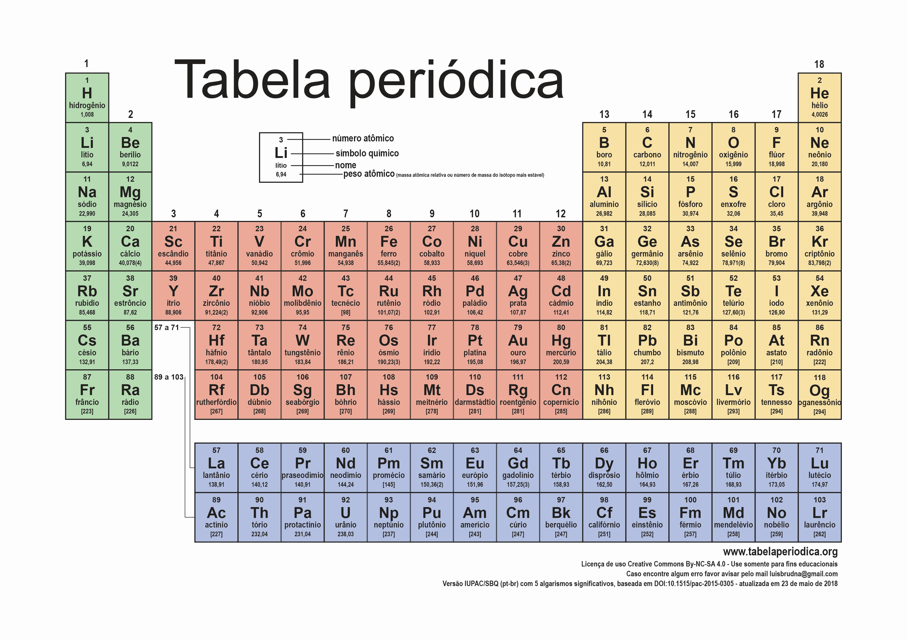

Tecnologia
Meta Interrompe Acesso a Ferramentas de IA Generativa no Brasil

A Meta, empresa controladora de plataformas como Instagram, Facebook e WhatsApp, anunciou a suspensão do uso de seus recursos de inteligência artificial generativa no Brasil. Essa decisão foi motivada por uma determinação da Autoridade Nacional de Proteção de Dados (ANPD), que exigiu a interrupção da coleta de dados dos usuários para treinar os sistemas de IA da empresa.
- Inteligência Artificial Generativa: Essa tecnologia permite a criação de conteúdos variados, como textos, imagens e vídeos, similar ao funcionamento do ChatGPT. Um dos recursos mais populares da Meta era o criador de figurinhas no WhatsApp, que gerava desenhos a partir de instruções textuais.
- Decisão da ANPD: A ANPD questionou a política de privacidade da Meta, que previa o uso de dados de usuários postados nas redes sociais para treinar sua IA. A autoridade considerou essa prática uma violação dos direitos dos usuários, resultando em uma multa proposta de R$ 50 mil por dia devido ao risco de danos aos direitos fundamentais dos titulares de dados.
- Impacto no Mercado: O Brasil é o segundo maior mercado do WhatsApp, com mais de 200 milhões de usuários, e a Meta planejava lançar a Meta AI, uma assistente integrada a suas plataformas. A interrupção dos serviços de IA generativa pode impactar a competitividade da empresa no país.
- Revisão da Política de Privacidade: A Meta revisou sua política de privacidade, retirando as cláusulas que permitiam o uso de dados de redes sociais para treinar sua IA generativa. A nova política entrou em vigor em 9 de julho de 2024.
A suspensão dos recursos de inteligência artificial generativa da Meta no Brasil reflete a crescente preocupação com a privacidade e a proteção de dados dos usuários. A decisão da ANPD destaca a necessidade de conformidade das empresas de tecnologia com as legislações locais, especialmente em um mercado tão significativo como o brasileiro. A interrupção pode ter implicações importantes para a Meta, que busca expandir suas ofertas de IA no país, ao mesmo tempo em que enfrenta desafios regulatórios.
Ciência
Cientistas Abrem Caminho para a Criação do Elemento 120 com Nova Técnica de Síntese
Cientistas do Laboratório Nacional Lawrence Berkeley, nos Estados Unidos, fizeram um avanço significativo na síntese de elementos superpesados da tabela periódica. Pela primeira vez, eles conseguiram produzir um elemento com grande massa utilizando um feixe de átomos de Titânio (Ti), em vez do Cálcio (Ca) tradicionalmente usado. Esse feito abre caminho para a possível criação do elemento 120, que inauguraria a oitava linha da tabela periódica.
- Síntese do Livermório (Lv): Utilizando o Ti, os pesquisadores sintetizaram o elemento Livermório (Lv), de número atômico 116, ao longo de 22 dias de experimentos.
- Elemento mais pesado atual: Até o momento, o elemento mais pesado registrado é o ununoctium (Uuo), de número atômico 118, que pertence à sétima linha da tabela periódica. A síntese do elemento 120 inauguraria uma nova linha.
- Teoria da ilha de estabilidade: Essa teoria propõe que, após uma série de elementos instáveis, haveria um grupo de elementos superpesados, porém estáveis, com número atômico em torno de 120 e massa 390. Atingir esse grupo permitiria manipular esses elementos para aplicações tecnológicas.
- Processo experimental: Os cientistas bombardearam uma folha fina de Plutônio (Pu) com um feixe de átomos de Ti, utilizando um acelerador de partículas, para produzir os átomos de Livermório.
- Possíveis avanços: Caso a ilha de estabilidade seja alcançada, será possível manipular elementos superpesados para novos experimentos e descobertas. Elementos dessa nova linha poderiam ter propriedades nunca antes vistas, com elétrons em orbitais ainda não explorados.
A síntese de elementos superpesados utilizando um feixe de Titânio, em vez de Cálcio, representa um avanço significativo na busca pela criação de novos elementos da tabela periódica. Esse feito abre a possibilidade de atingir o elemento 120 e, possivelmente, a ilha de estabilidade proposta pela teoria, onde elementos superpesados seriam estáveis o suficiente para serem manipulados e aplicados em novas tecnologias. Caso alcançada, essa nova fronteira da tabela periódica pode revelar propriedades e aplicações nunca antes vistas para esses elementos exóticos.
Finanças
A Surpresa nas Expectativas Econômicas

A percepção de que a desaceleração econômica e a inflação persistente no Brasil não devem ser vistas como surpresas, mas sim como consequências de fatores estruturais e conjunturais que vêm se acumulando ao longo do tempo.
- Mudanças nas projeções fiscais minando a confiança dos investidores.
- Controle das contas públicas é fundamental para a sustentabilidade econômica.
- Incerteza sobre as políticas econômicas do governo.
- FecomercioSP defende a modernização do Estado.
- Sinalizações do governo sobre as contas públicas são cruciais para a confiança dos investidores.
- Mudanças nas projeções fiscais minando a confiança dos investidores.
- Controle das contas públicas é fundamental para a sustentabilidade econômica.
Isso se deve ao fato de que o controle das contas públicas é fundamental para a sustentabilidade econômica de um país. Quando o governo gasta mais do que arrecada, isso leva à inflação, juros mais altos e volatilidade nos mercados.
O arcabouço fiscal proposto no início de 2023 foi bem recebido pelo mercado, mas as constantes mudanças de projeções para pior estão levando à incerteza.
A FecomercioSP defende a modernização do Estado para reduzir custos e tornar o ambiente de negócios mais competitivo.